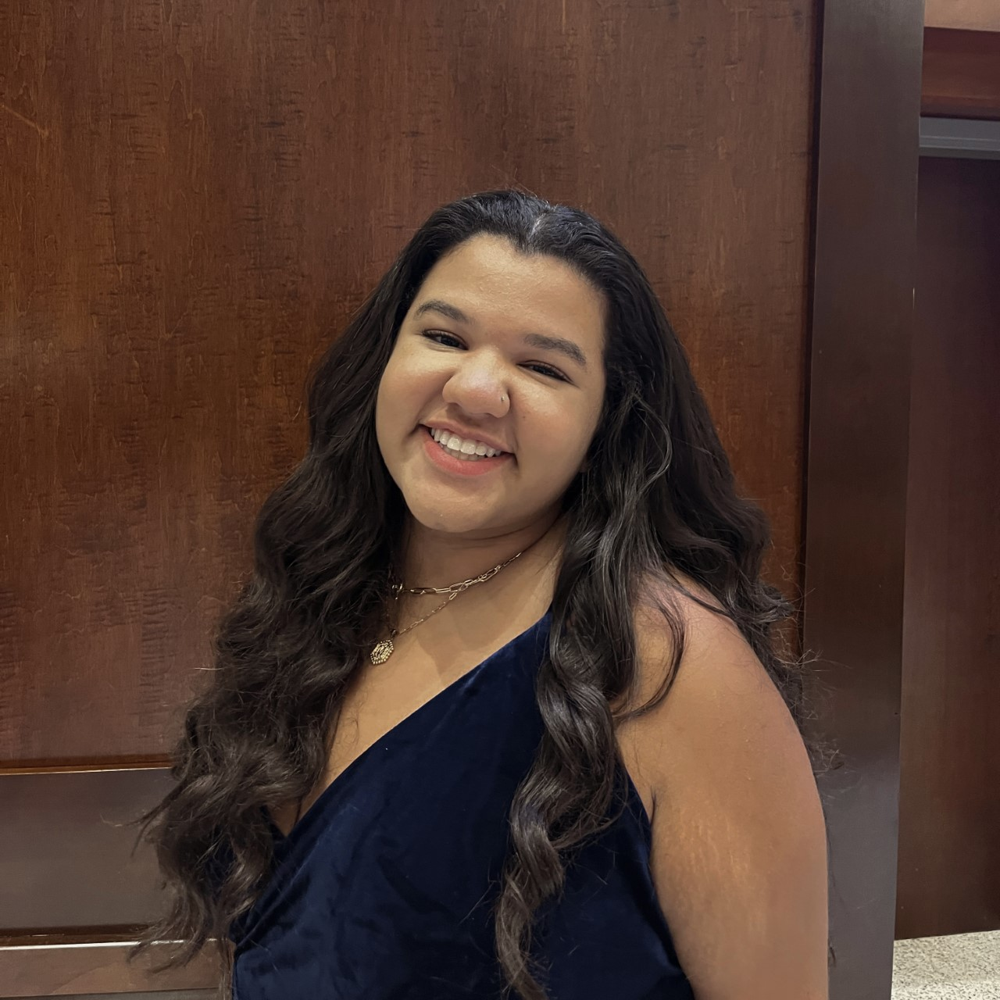

Maddie Foster
Maddie FosterHello and welcome to a little bit about me. My name is Madeline Foster and I am a sophomore at Elon University studying Strategic Communications and Arts Administration. In addition, I have minors in Theatre Arts and Business Administration. I am originally from Richmond, Virginia where I attended Maggie L. Walker Governor's School for Government and International Studies. I look forward to showing you a little bit more about myself through this digital platform.

(804) 938-0631 mfoster29@elon.edu